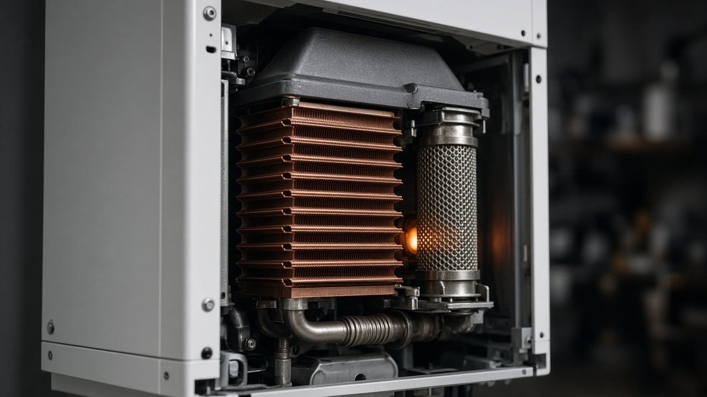

Ugradnja grejnih sistema
Postavljamo gasne i elektro kotlove i povezujemo ih na kućnu instalaciju. Dogovaramo izlazak, pripremamo priključke i puštamo uređaj u rad.

Ovlašćeni servis · Požarevac
Fluid 012 je radnja Aleksandra Aleksića za ugradnju, održavanje i servis grejnih sistema. Ovlašćeni servis za Vaillant, Protherm i Bosch, Ratarska 177.
Usluge
Delatnost radnje je instalacija i servisiranje grejnih sistema, gasnih i elektro kotlova. Termin se dogovara telefonom.
Postavljamo gasne i elektro kotlove i povezujemo ih na kućnu instalaciju. Dogovaramo izlazak, pripremamo priključke i puštamo uređaj u rad.
Kada kotao ne greje, gubi pritisak ili javlja grešku, pregledamo ga, čistimo, podešavamo i menjamo deo kada je to potrebno. Ako tražite servis zidnog gasnog kotla ili gasnog bojlera u Požarevcu, pozovite Fluid 012.
Održavamo i popravljamo elektro kotlove: grejače, automatiku, cirkulaciju i zaštitne elemente, da grejanje ostane pouzdano.
Pregled pre sezone smanjuje zastoj usred zime. Proveravamo sagorevanje, zaptivenost, pritisak i rad cirkulacione pumpe, u skladu sa preporukom proizvođača.

Vaillant · Protherm · Bosch
Za popravku koristimo delove proizvođača čije kotlove servisiramo. Zvanične stranice tih firmi su u nastavku.
Sajtovi proizvođačaProizvođači
U Požarevcu je Fluid 012 ovlašćeni servis za Vaillant, Protherm i Bosch. Linkovi vode na zvanične stranice proizvođača.
Ovlašćeni servis
Sistemi za grejanje. Fluid 012 servisira njihove gasne kotlove i ugrađuje originalne rezervne delove.
Ovlašćeni servis
Brend Vaillant grupe, prisutan na tržištu Srbije. Servis kotlova i snabdevanje originalnim delovima ide preko ovlašćene mreže.
Ovlašćeni servis
Bosch Home Comfort: gasni i elektro kotlovi. Tehnička podrška i servisna organizacija na zvaničnom sajtu za Srbiju.
O radnji
Fluid 012 s.z.r. je servis i preduzetnička radnja. Nosilac je Aleksandar Aleksić PR, delatnost — instalacija grejnih sistema. Sedište je u Požarevcu, ulica Ratarska 177.
Radnja ugrađuje, održava i servisira grejne sisteme, gasne i elektro kotlove. Za Vaillant, Protherm i Bosch Fluid 012 je ovlašćeni serviser.

Pitanja
Fluid 012 ugrađuje, održava i servisira grejne sisteme, gasne i elektro kotlove. Ovlašćeni je serviser za Vaillant, Protherm i Bosch.
Na adresi Ratarska 177, 12000 Požarevac.
Pozovite 012 751 6126, 060 300 5900 ili 060 300 5899 i dogovorite termin.
Da. Delatnost radnje je instalacija i servisiranje grejnih sistema, gasnih i elektro kotlova.
Originalne rezervne delove proizvođača Vaillant, Protherm i Bosch. Zvanične stranice tih firmi nalaze se u odeljku Kotlovi i rezervni delovi.
Kontakt